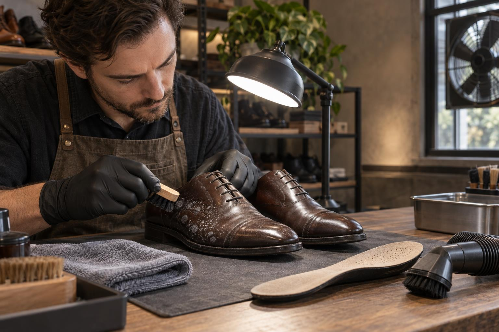
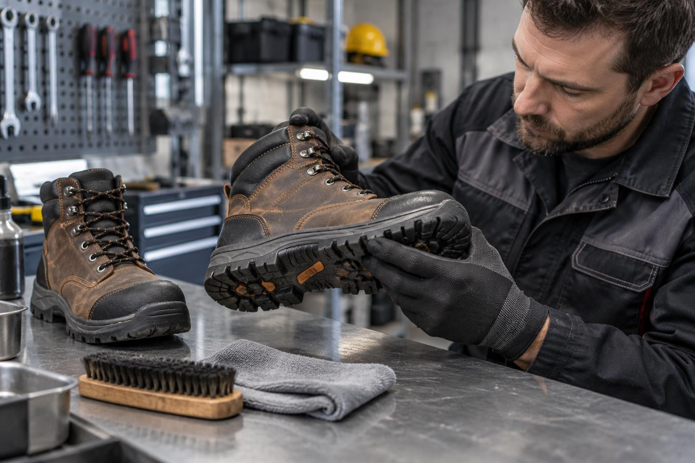
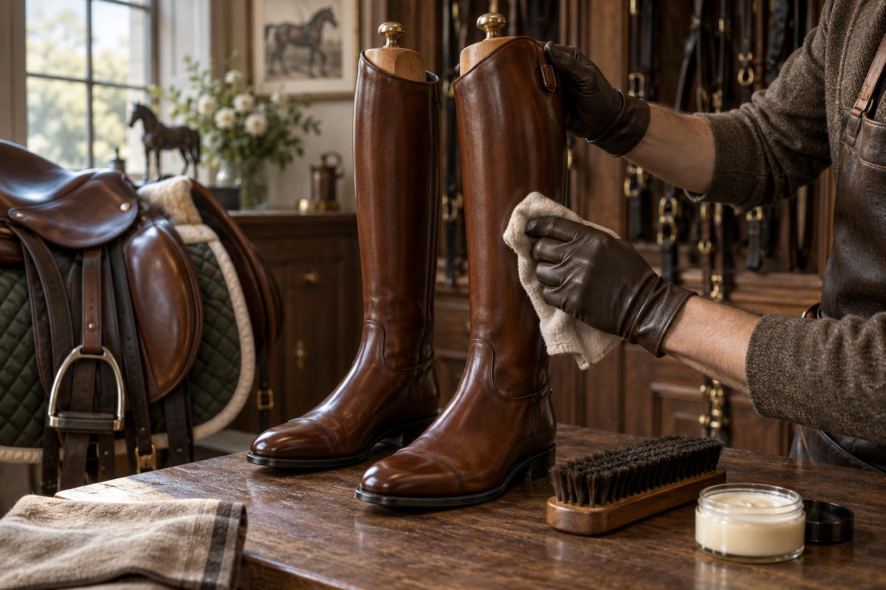
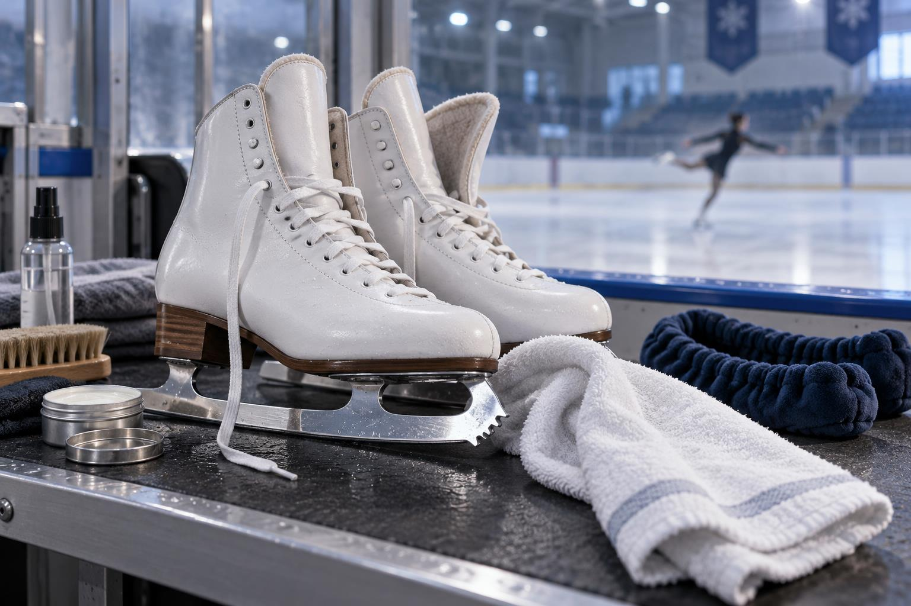
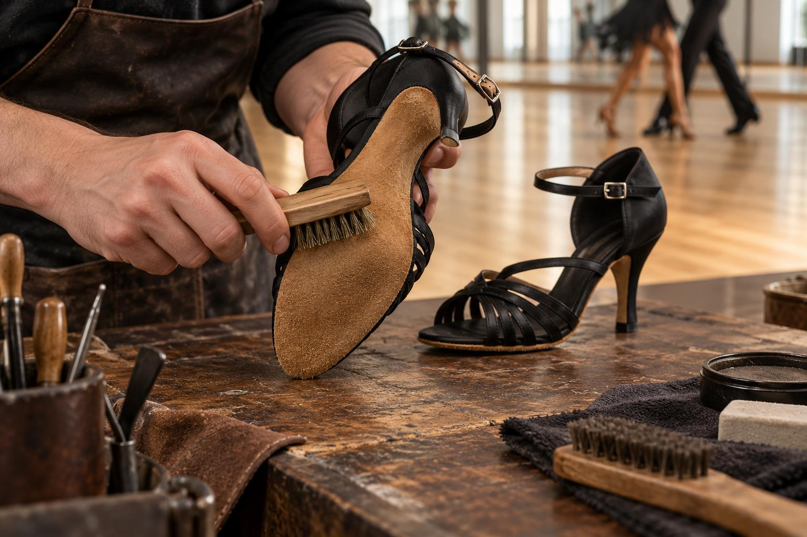
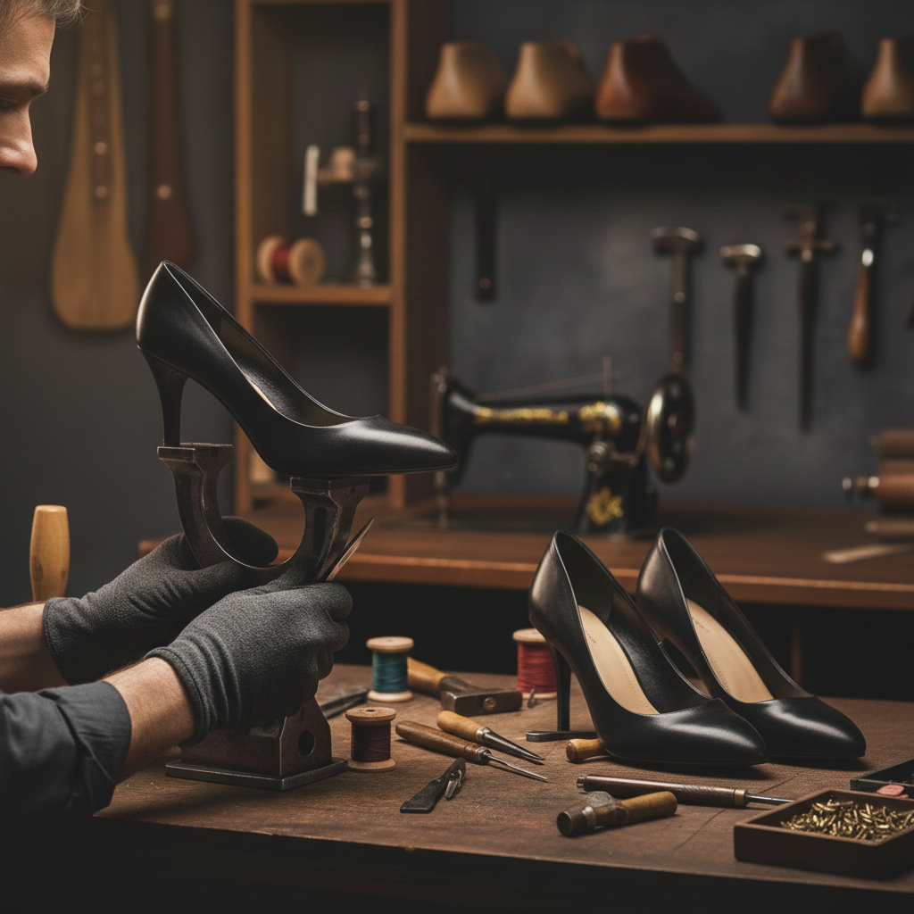

Блог / Журнал мастерской
Вещи надолго.
Знания — тоже.
О материалах, уходе и деталях,
которые продлевают жизнь любимых вещей.
В фокусе / Уход за обувью
Как чистить и сушить футбольные бутсы после игры
Грунт, крошка, влага. Что сделать после матча, чтобы сохранить пару.
Читать статью7 материалов

Как безопасно удалить плесень из обуви и оценить повреждения

Как чистить и проверять защитную рабочую обувь

Как ухаживать за кожаными сапогами для верховой езды

Как сушить фигурные коньки и защищать лезвия от ржавчины

Как чистить скальные туфли и вовремя заметить износ подошвы

Профессиональный ремонт обуви с гарантией качества: почему нам доверяют любимые пары
Статья пока не нашлась.
Попробуйте другую тему или формулировку.